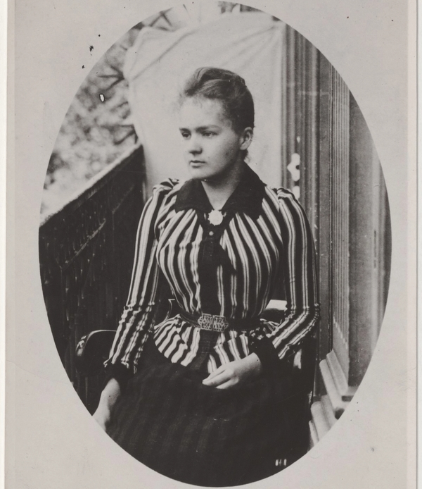
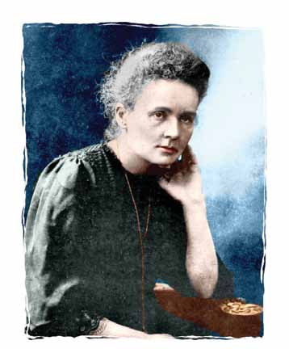
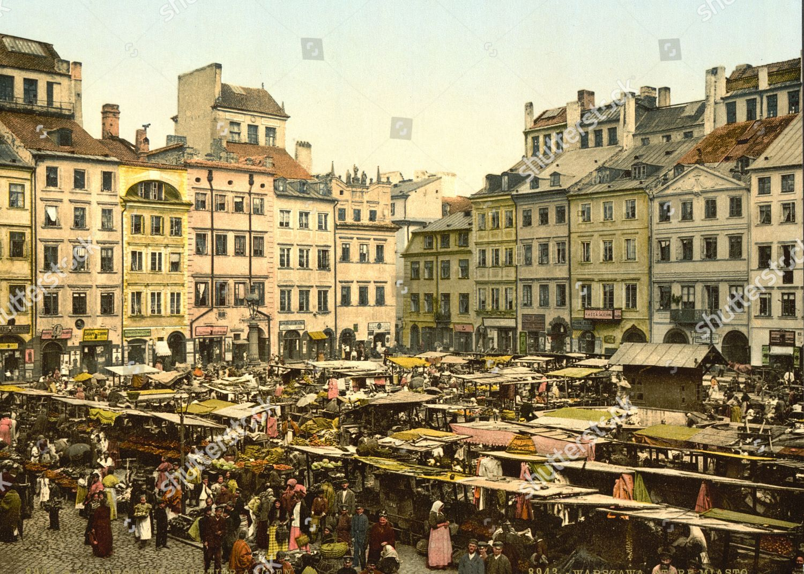
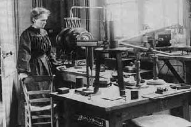
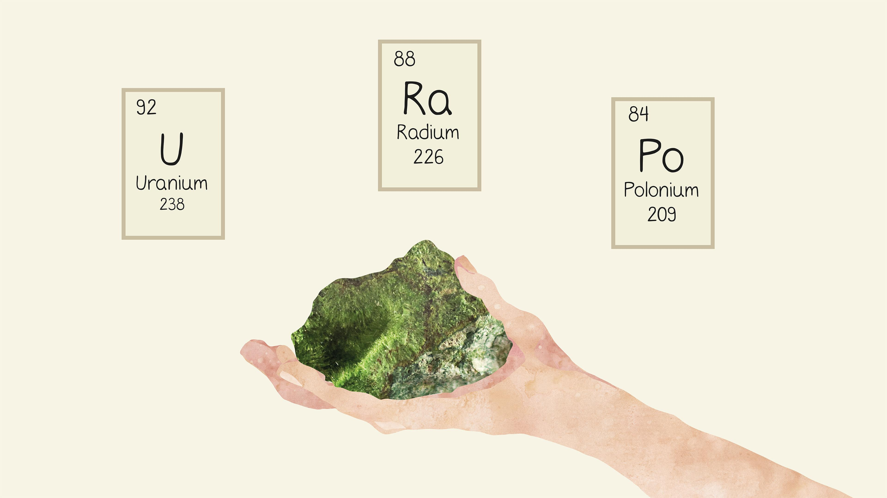
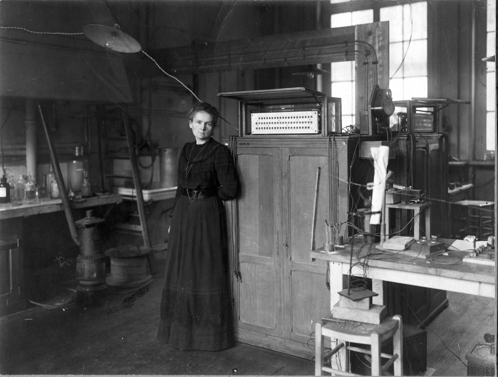
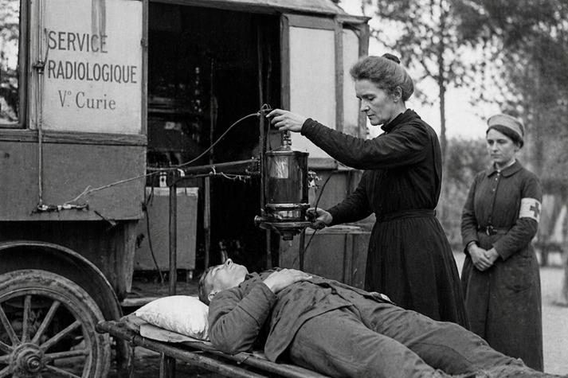
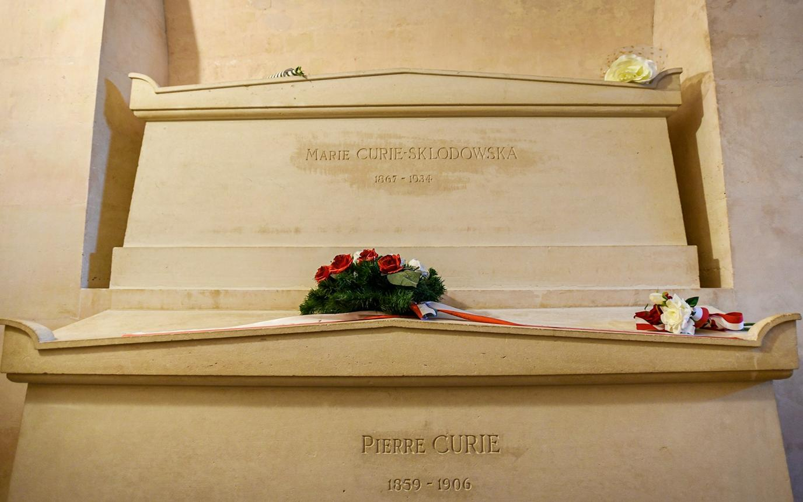

THƯ VIỆN VÀ NGUỒN
Lưu giữ tư liệu — tôn trọng tri thức
Hình ảnh, ghi chú và nguồn tham khảo giúp câu chuyện khoa học trở nên trực quan hơn, đồng thời cho phép người đọc tiếp tục kiểm chứng thông tin.

KHOA HỌCTHƯ VIỆN HÌNH ẢNH
Những lát cắt của hành trình khoa học








GÓC TƯ LIỆU OFFLINE
Một phút tìm hiểu qua bảng thông tin
TƯ LIỆU
Marie Curie và hành trình nghiên cứu phóng xạ
Marie Curie đã dành nhiều năm nghiên cứu hiện tượng phóng xạ, mở ra bước tiến quan trọng cho vật lý và hóa học hiện đại. Năm 1898, bà cùng Pierre Curie phát hiện hai nguyên tố mới là polonium và radium. Bằng sự kiên trì và niềm đam mê khoa học, bà trở thành người phụ nữ đầu tiên nhận giải Nobel, đồng thời để lại di sản to lớn cho y học và nhân loại.
NGUỒN THAM KHẢO
Tài liệu để đọc và kiểm chứng
PHÂN CÔNG
Bảng phân công nhiệm vụ
| Thành viên | Công việc chính | Công việc hỗ trợ |
|---|---|---|
| Trần Khánh Ngọc | Tìm kiếm thông tin, viết nội dung về Marie Curie và xây dựng một số trang HTML. | Tìm hình ảnh, video và nguồn tham khảo. |
| Trần Ngọc Nguyên | Thiết kế giao diện website bằng HTML, CSS và hoàn thiện các trang còn lại. | Kiểm tra lỗi, chỉnh sửa giao diện và hoàn thiện website. |